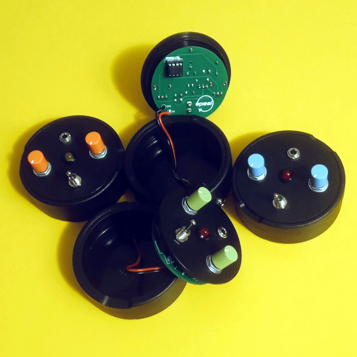

snus85
Snus85 is a programmable sound device.
It uses a ATtiny85 chip, the possibilities of sound generation are endless.
Two knobs allow control over the software parameters and therefore over the generated sound.
It works powered by 9 volts (2.1mm barrel jack, center negative), the audio output is mono, on a 1/8" jack.

matrix
matrix is a passive matrix mixer with 4 inputs and 4 outputs.
It routes multiple input signals to multiple outputs, it can be used to distribute signals to different
effect chains and amplification systems or to control the gain of feedback loops when used in no-input
configurations.
All the jacks are 3,5 mm (1/8") mono.
It does not require power supply.
matrix is available on my Tindie store.